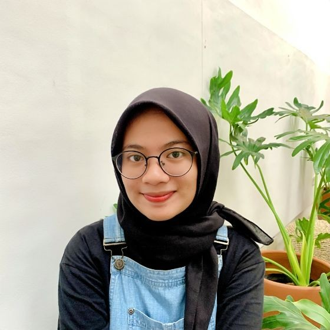

Aulia Putri Rachmadni
I graduated in Information Technology and have enthusiasm for technology and education. I have aspirations to use my technical knowledge in creating strategic and effective digital learning. I have analytical skills and an understanding of technology trends.

Experiences
Coach at PT. Digikidz Indonesia, Surakarta
August 2022 — Now
- Effectively maintained partnerships with 10+ schools and ensured that the collaborations will continue into the upcoming year through extracurricular programs.
- Effectively maintained partnerships with 10+ schools and ensured that the collaborations will continue into the upcoming year through extracurricular programs.
- Proactively engaged in teaching 250+ students.
Assistant Practicum at Information Technology Department, Surakarta
February 2021 — August 2022
Student Intern at Diskominfo Sp, Surakarta
April 2021 — June 2021
- Successfully developed 4 website for public health centers using CMS Wordpress within 2 months.
- Reported statuses of 50+ domains.
- Documented feedback from the Desk Smart City event.
Education
Muhammadiyah University of Surakarta
2018-2023
I graduated from Muhammadiyah University of Surakarta with a major in Computer Engineering. During my time at university, I was actively involved in the PRISMA UMS organization. I graduated with my final project research on the design and development of a reservation website using Laravel.